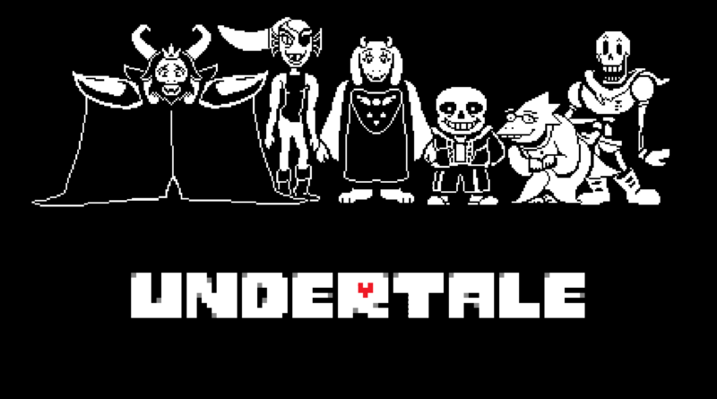
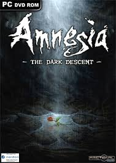

undertale
Undertale est un jeu vidéo de rôle indépendant développé par Toby Fox. Le jeu propose de contrôler un enfant tombé dans l'Underground (« souterrain »), une grande région isolée sous la surface de la Terre, séparée de la surface par une barrière magique et peuplée de monstres. Le joueur interagit à plusieurs reprises avec ces monstres dans sa quête pour remonter à la surface, principalement via un système de combat mêlant tour-par-tour et shoot 'em up. Dans celui-ci, le joueur doit éviter des projectiles envoyés par les monstres rencontrés, et a ensuite la possibilité d'attaquer son adversaire pour le tuer, ou de l'épargner. Le choix de tuer ou épargner affecte le jeu, altérant les dialogues, les personnages, et la narration dépendant des choix effectués. Le jeu a été entièrement et indépendamment développé par Toby Fox, un développeur et compositeur de nationalité américaine, que ce soit dans l'écriture du scénario ou la composition des musiques, bien que certains personnages aient été dessinés par d'autres artistes. Parmi les inspirations du jeu, sont notamment cités les jeux de rôle des séries Mother et Mario and Luigi, ainsi que les manic shooters de Touhou Project, et la série comique britannique Mr Bean. Dans la conception initiale d'Undertale, le jeu durait environ deux heures et devait sortir en milieu d'année 2014, le développement dure finalement près de trois ans du fait du rallongement considérable de la durée de la campagne, retardant la sortie. Le jeu est publié le 15 septembre 2015 sur Steam pour Windows et OS X et sur Linux en juillet 2016, tandis que des portages sur PlayStation 4 et PlayStation Vita sont sortis le 15 août 2017 et sur Nintendo Switch durant le mois de septembre 2018. À sa sortie, il est acclamé pour son écriture, sa thématique, son système de combat, sa musique, et son originalité ; de nombreux éloges étant également faits par rapport à l'histoire, aux dialogues, et aux personnages. Undertale s'est vendu à plus d'un million d'exemplaires et a été nommé pour plusieurs prix tels que celui de Game of the Year (« Jeu de l'année ») décerné par plusieurs médias ainsi qu'à des conventions. Un spin-off situé dans un univers alternatif à celui d'Undertale et également développé par Toby Fox, Deltarune, voit son premier chapitre sortir le 31 octobre 20181.
Histoire: L'histoire d'Undertale prend place dans l'Underground (« souterrain »), une partie du monde où les monstres, vivant autrefois en paix avec les humains, furent bannis après une guerre entre les deux races. Cette zone est séparée de la surface par une barrière magique imparfaite, le seul moyen d'y entrer se trouvant au mont Ebott2. Un jour, un enfant humain tombe dans l'Underground en s'aventurant au sommet du mont. Il y rencontre Flowey, une fleur dotée d'une conscience apprenant les mécaniques de jeu et encourageant l'humain à augmenter son « LV », ou « LOVE », en gagnant de « l'EXP » en tuant des monstresa 1. Lorsque Flowey tente de tuer l'humain pour lui dérober son âme, celui-ci est secouru par Toriel, un monstre bipède femelle ressemblant à une chèvre, qui le prend sous sa protection et lui apprend à résoudre les puzzles et terminer les combats de manière pacifique. Elle prévoit initialement d'adopter l'humain afin de le protéger d'Asgore Dreemurr, le roi du souterrain. L'humain quitte finalement Toriel et part à la recherche du château d'Asgore, qui abrite la barrière menant à la surface. Sur son chemin, l'humain rencontre plusieurs monstres, tels que les frères Sans et Papyrus, deux squelettes sentinelles ; Undyne, chef de la garde royale ; Alphys, scientifique du royaume ; et Mettaton, un robot animateur de télévision créé par Alphys. Certains de ces monstres sont combattus et l'humain a alors le choix de les tuer ou de les épargner en leur parlant et en gagnant leur confiance. Les monstres épargnés deviennent alors des amis. Durant l'aventure, l'humain apprend que les monstres ont été contraints de vivre dans l'Undergound à la suite d'une terrible guerre entre eux et les humains, guerre remportée par ces derniers. Mais longtemps après, Asriel, fils d'Asgore et de Toriel, se prend d'amitié pour Chara, un enfant humain lui aussi tombé dans le souterrain et qui a été ensuite adopté par la famille royale. Un jour, Chara est mortellement et accidentellement empoisonné par des fleurs. Lorsque Asriel ramène le corps de son ami aux humains, ceux-ci l'attaquent et le tuent, croyant que l'état de l'enfant a été causé par Asriel. En apprenant cela, Asgore est déterminé à leur déclarer la guerre. Il cherche donc depuis le moyen de casser la barrière séparant le souterrain de la surface. Pour ce faire il a besoin de sept âmes humaines. Ainsi, il tue chaque humain tombant dans l'Undergound pour prélever son âme. Lors des évènements du jeu, Asgore possède six âmes humaines. La fin du jeu dépend de la façon dont le joueur résout les combats avec les monstres
Amnesia: The Dark Descent
Amnesia: The Dark Descent est un jeu vidéo de type survival horror en vue subjective développé par Frictional Games. Il est disponible en téléchargement depuis 2010 sur PC, OS X et Linux, et depuis novembre 2016 sur PS4.
Le joueur prend le rôle de Daniel, qui se réveille à l'intérieur d'un château apparemment désert sans savoir comment il s'est retrouvé là. Peu après, Daniel trouve une note qu'il aurait lui-même écrite auparavant. Sur cette note, il donne l'ordre de tuer Alexander, le propriétaire du château. Daniel apprend également, grâce à la note, qu'il a décidé lui-même de se faire perdre la mémoire. Au fur à mesure qu'il progresse dans le château, Daniel en apprend davantage à propos de lui et d'Alexander à l'aide de notes et à l'aide de souvenirs qui lui reviennent. Toutefois, il doit également s'enfuir devant une créature cauchemardesque qui le poursuit à travers les couloirs sombres du château.
